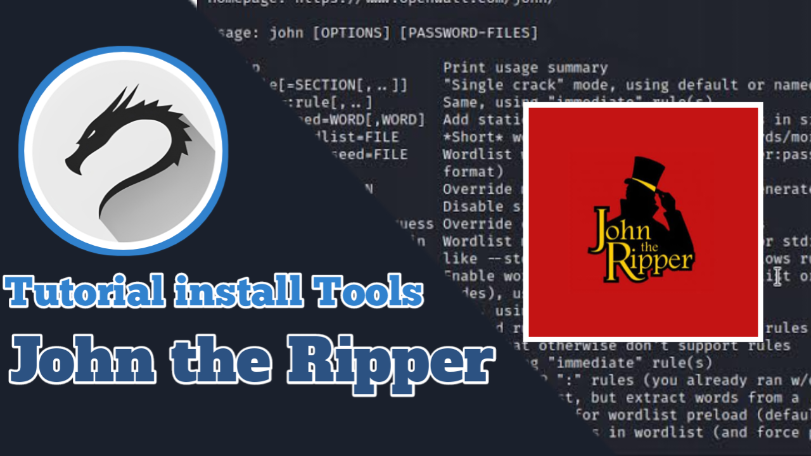
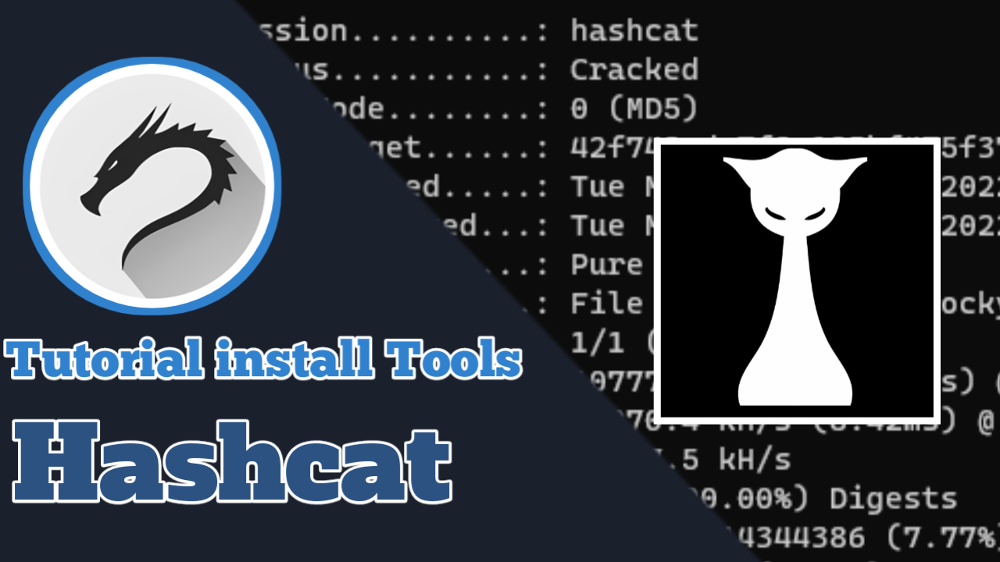

Alat untuk network discovery dan security auditing.
Platform eksploitasi yang sangat kuat untuk pengujian penetrasi.
Password cracker yang mendukung berbagai protokol.
Alat otomatisasi deteksi dan eksploitasi SQL Injection.
Web server scanner yang mendeteksi kelemahan keamanan.

Alat pengunduhan berkas dari jaringan.

Utility jaringan yang serbaguna.

Alat untuk cracking password.

Advanced password recovery tool.
Tools untuk audit keamanan jaringan WiFi.

Alat untuk brute force direktori pada web server.

Brute force direktori web menggunakan wordlist.

Alat untuk scanning keamanan situs WordPress.

Toolkit untuk social engineering.

Alat DoS untuk menyerang server web.

Pengelola paket untuk Termux, memudahkan instalasi tools.

Mengakses fitur perangkat langsung dari Termux.

Terminal multiplexer untuk multitasking di Termux.

Script otomatis untuk instalasi hacking tools.

Alat untuk OSINT dan gathering informasi.

Framework pengumpulan informasi open-source.

DNS enumeration tool yang sangat bagus.

Alat untuk pengetesan keamanan jaringan layer 2.

Alat untuk membuat custom password list.

Alat deteksi dan eksploitasi XSS.

Menginstal Arch Linux di Termux.

Tunneling service untuk membuka local server ke publik.

Alat untuk memodifikasi APK dengan payload.

Phishing tool dengan template login situs terkenal.

APK vulnerability scanner.

SQL injection dorking dan scanner otomatis.

Peretasan terhadap akun Facebook.

Jaringan vulnerability scanner oleh Google.

Phishing tool dengan dukungan beberapa template.

Collection of various hacking tools.

Melacak lokasi IP address.

OSINT tool untuk mencari profil sosial media seseorang.